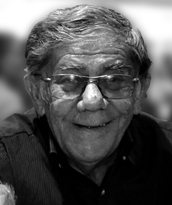

Nasceu em 20 de novembro de 1941, em Ouricuri, Pernambuco. Filho do deputado e jornalista Chico Netto e de Dona Marú, Otávio atuou como jornalista em vários estados brasileiros antes de fixar-se em Araguaína, Tocantins. Fundador e editor de importantes jornais regionais, como Tribuna da Amazônia (1973), O Estado do Tocantins e Folha de Palmas (1989), foi um defensor ativo da criação do Estado do Tocantins. Em 1994, fundou o jornal O Estado do Maranhão do Sul, voltado à divisão do Maranhão.
Membro fundador do Instituto Histórico e Geográfico do Tocantins, do Sindicato dos Jornalistas do Estado e do Conselho Estadual de Cultura, é titular da Cadeira 38 da Academia Tocantinense de Letras. Autor de diversas obras sobre a história e cultura do Tocantins, recebeu prêmios e homenagens pelo seu trabalho jornalístico e literário.
